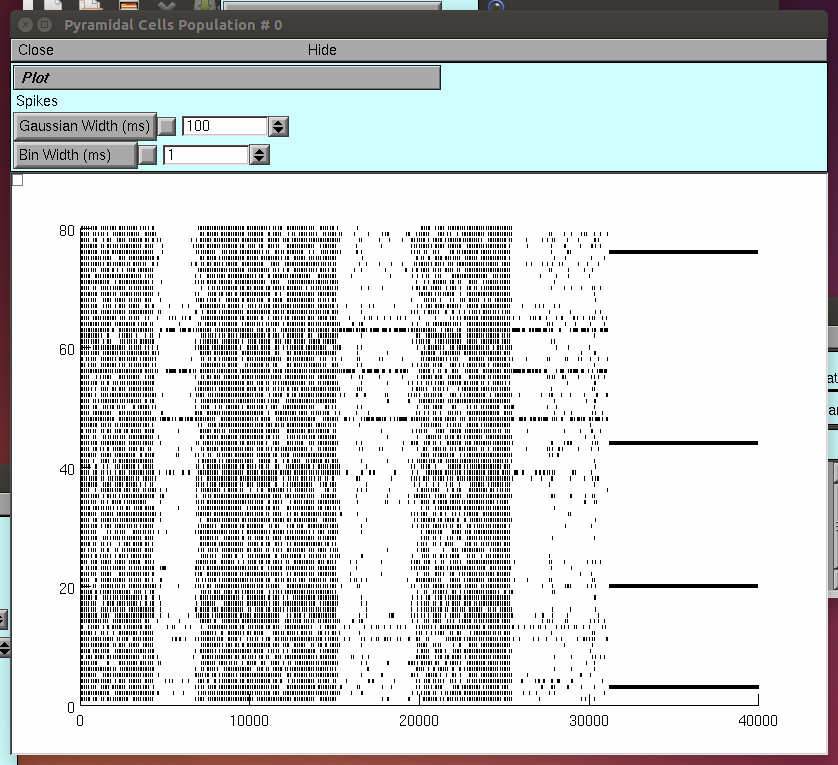
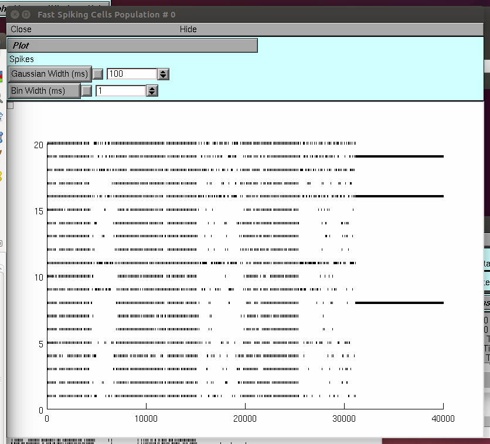

Author: Oscar Javier Avella Gonzalez (oscarjavella at gmail.com)
This model was implemented in the Simulation Environment NEURON
version 7.1 and uses Matlab V.209bb-2014b to analyze the data. All
routines are based on general functions of this platform.
Main paper: Oscar Javier Avella Gonzalez, Huibert D. Mansvelder, Jaap
van Pelt, Arjen van Ooyen (2015). H-channels affect frequency, power
and amplitude fluctuations of neuronal network oscillations.
Front. Comput. Neurosci.9. doi:10.3389/fncom.2015.00141
http://www.frontiersin.org/Journal/Abstract.aspx?s=237&name=computational_neuroscience&ART_DOI=10.3389/fncom.2015.00141
The model and the whole set of routines are released
under the GNU GPL version 3:
http://www.gnu.org/copyleft/gpl.html
Purpose of this work:
This model was designed to study the impact of H-currents on the
dynamics of cortical oscillations, and in paticular on the occurrence
of high and low amplitude episodes (HAE, LAE) in network oscillations.
The H-current is a slow, hyperpolarization-activated, depolarizing
current that contributes to neuronal resonance and membrane potential.
We characterized amplitude fluctuations in network oscillations by
measuring the average durations of HAEs and LAEs, and explored how
these were modulated by trains of external spikes, both in the
presence and absence of H-channels.
We looked at HAE duration, the frequency and power of network
oscillations, and the effect of H-channels on the temporal voltage
profile in single cells.
We found that H-currents increased the oscillation frequency and, in
combination with external spikes, representing input from areas
outside the network, strongly decreased the synchrony of firing. As a
consequence, the oscillation power and the duration of episodes during
which the network exhibited high-amplitude oscillations were greatly
reduced in the presence of H-channels.
Impaired expression of H-channels, with both up- and
downregulation occurring, is associated with the pathology
of epileptic disorders (Chen et al., 2001; Biel et al., 2009).
Our results are consistent with the observed effects of altered H-channel
expression in epilepsy. For example, as in the model, upregulation of H-channels
in hippocampal CA1 neurons leads to an increased probability of action
potential firing and a higher firing frequency (Chen et al., 2001).
Model Description:
The model consisted of a network of 80 excitatory (E) cells and 20
inhibitory (I) cells, interconnected with AMPA (excitatory) and GABAA
(inhibitory) synapses. The synaptic strengths and connection
probabilities were chosen so as to produce a strong PING-like
(pyramidal-interneuron gamma) rhythm. The conductance-based cells had
a single compartment with K+ Na+, leak and H-channels.
Running the simulation:
The model was originally ran in NEURON 7.1 using the conventional
command-line scheme, edited in pspad (but any other text editor also
works).
Either autolaunch from ModelDB or download the archive and compile the
mod files in the mods/network_sims_MODs folder.
See http://senselab.med.yale.edu/ModelDB/NEURON_DwnldGuide.html
for more help. To set up the simulation example, go to /main directory
and load the file
"RunSimulation.hoc"
Once the windows are open, press the button "single run" in the
MultipleRuncontrol panel. The simulation will start, running for
40000ms. When the simulation stops, expand the window "Pyram Cells
Population # 0" in the horizontal axis, to check the dynamics
of the excitatory population (rastergram).

Do the same for the window labeled Fast Spiking Cells Population #0
and check the inhibitory population dynamics.

The results of this "program run" are automatically saved in
the file './output_h_test/WW_example_ONLY_ih.m'
Producing the example figure:
The example shown in figure 4 of the paper can be obtained by running
the simulation as described above and then
by double clicking on the filename '.\main\RunExampleFig.m'
into matlab. Click on "run" and wait for a
couple of minutes until the results are displayed.
Original figure Url:
http://www.frontiersin.org/files/Articles/156944/fncom-09-00141-HTML/image_m/fncom-09-00141-g004.jpg
As stated in the orginal figure's caption, 'Shown are raster diagram
of cell firing (A), firing-rate histogram with interpolated spline
polynomial (B), wavelet transform (C) and Fourier transform (D) of the
excitatory population. The cells fired at a frequency of about 10
Hz. Note that due to the highly synchronized activity, the Fourier
transform (D) also produced a peak at a harmonic frequency (about 20
Hz), but there were no cells that actually fired at that frequency
[see (A)]. There are large fluctuations in oscillation amplitude (B)
that occasionally just drop below the HAE threshold. Cells had
h-channels but did not receive CDC or AP input.'
Manipulating and Changing parameters:
To change connection probabilities, synaptic strength, and
characteristics of the input, such as interspike intervals and CDC
(current) amplitudes, edit the file
\main\functions_net_bgk_multitest_sparse.hoc and check for the
respective parameter in lines 7-33 in file.
To change the output file, open the folder \main\sessions and load the
file "DrivePower_run_mono_no_spk.ses" and modify the content of line
41 file_name="./output_matlab/WaxingWaning" with the modified name.
Finally, in order to add or remove H-channels, go to the templates
folder and use your favorite editor to open:
FS_WT_modif.tem
Pyram_WT_modif.tem
and comment in each file, the lines with the next content:
===================================
//h-currents
insert htc
ehd_htc=-30 //(mV)
ghdbar_htc=(5)*1e-5
===================================
Additional References:
Chen, K., Aradi, I., Thon, N., Eghbal-Ahmadi, M., Baram, T. Z., and
Soltesz, I. (2001). Persistently modified h-channels after complex
febrile seizures convert the seizure-induced enhancement of inhibition
to hyperexcitability. Nat. Med. 7, 331-337. doi: 10.1038/85480
Biel, M., Wahl-Schott, C., Michalakis, S., and Zong, X. (2009).
Hyperpolarization-activated cation channels: from genes to function.
Physiol. Rev. 89, 847-885. doi: 10.1152/physrev.00029.2008